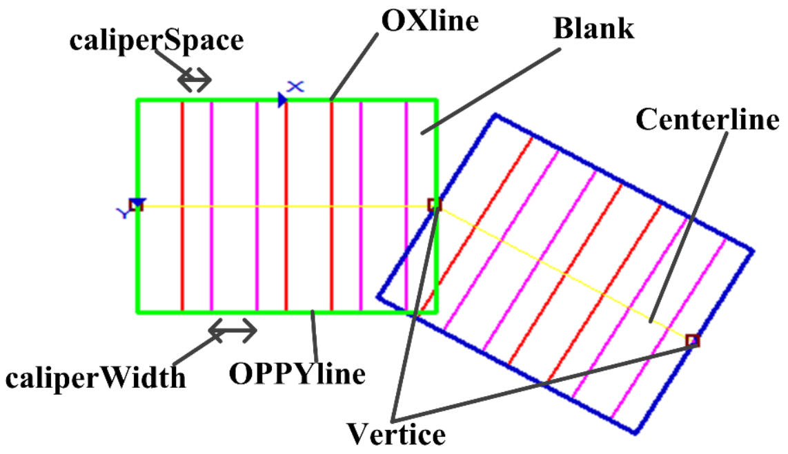

表示折线Gui控件类，即在视图中可见的图形，内部对scTrendlineCaliper类型进行了封装，方便在图像上显示和交互，例如边宽检测工具的折线边宽区域（对应属性栏中边宽检测类型为折线）、珠体跟踪工具的折线珠体训练区域。

| 分类 | 接口名称 | 接口描述 |
|---|---|---|
| 构造 | scGuiTrendline | scGuiTrendline ()默认构造函数。 |
| 函数 | GetTrendlineCaliper | 获取折线卡尺。 |
| SetTrendlineCaliper | 设置折线卡尺。 | |
| GetPolyline | 获取折线区域（多边形）。 | |
| SetPolyline | 设置折线区域（多边形）。 | |
| GetYlength | 获取折线高度(OY边长度) | |
| SetYlength | 设置折线高度(OY边长度) | |
| GetCaliperWidth | 获取卡尺宽度。 | |
| SetCaliperWidth | 设置卡尺宽度。 | |
| GetCaliperSpace | 获取卡尺间隔。 | |
| SetCaliperSpace | 设置卡尺间隔。 | |
| GetCaliperID | 获取卡尺ID。 | |
| SetCaliperID | 设置卡尺ID。 | |
| GetSearchDirection | 获取卡尺搜索方向。 | |
| SetSearchDirection | 设置卡尺搜索方向。 | |
| GetCaliperNum | 获取卡尺数目。 |
功能：构造scGuiTrendline对象。
参数：无。
返回值：无。
功能：获取折线卡尺。
参数：无。
返回值：折线卡尺，scTrendlineCaliper类型。
功能：设置折线卡尺。
参数：
返回值：bool类型，表示是否设置成功。。
功能：获取折线区域（多边形）。
参数：无。
返回值：折线区域（多边形），scPolyline类型。
功能：设置折线区域（多边形）。
参数：
返回值：无。
功能：获取折线高度（OY边长度）。
参数：无。
返回值：折线高度（OY边长度），浮点数类型。
功能：设置折线高度（OY边长度）。
参数：
返回值：bool类型，表示是否设置成功。
功能：获取卡尺宽度。
参数：无。
返回值：卡尺宽度，整型。
功能：设置卡尺宽度。
参数：
返回值：bool类型，表示是否设置成功。
功能：获取卡尺间隔。
参数：无。
返回值：卡尺间隔，整型。
功能：设置卡尺间隔。
参数：
返回值：bool类型，表示是否设置成功。
功能：获取卡尺ID。
参数：无。
返回值：卡尺ID，整型。
功能：设置卡尺ID。
参数：
返回值：bool类型，表示是否设置成功。
功能：获取卡尺搜索方向。
参数：无。
返回值：卡尺搜索方向，整型。
功能：设置卡尺搜索方向。
参数：
返回值：bool类型，表示是否设置成功。
功能：获取卡尺数目。
参数：无。
返回值：卡尺数目，整型。
无
```python ROI_Line1 = GvTool.GetToolData(“边宽检测工具_013.线边宽区域”) rectex = ROI_Line1.GetRectEx() po = rectex.GetOriginPoint() Px = rectex.GetCornerPx() Py = rectex.GetCornerPy() Popp = rectex.GetCornerPopp()
print(po.GetX(),po.GetY()) print(Px.GetX(),Px.GetY()) print(Py.GetX(),Py.GetY()) print(Popp.GetX(),Popp.GetY()) ```